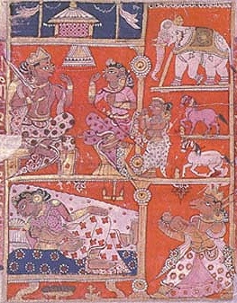

Hinduism
Buy this Book
|
 |
The Little Clay Cartby Shudraka, translated by Arthur William Ryder[1905] |
The Mricchakatika, or Little Clay Cart, is one of the oldest Indian plays known, probably written about the 2nd century BCE. This is the only work by the author King Shudraka, who preceded the more famous Kalidasa by about five centuries. Little else is known about the author.
The play is a what is today known as a 'screwball comedy.' The central character, Vasantasena, is a courtesan, involved in a love triangle. Courtesans were a class of female entertainers, who were skilled in the arts of love. They had long-term relationships with their clients, and some become wealthy or even formal wives, (as does Vasantasena), so they had both social mobility and independence. The characters span society from high to low, including royals, soldiers, priests and a motley crew of commoners. There is enough action, hilarity, historical atmosphere, and subplots in the ten (!) acts for a TV miniseries, including a cliffhanger at the end which is used to comic effect.
Technical notes: Due to the large number of elaborate paragraph continuations in this text, the continuations are only noted in HTML comments instead of marginally as normal.
--J.B. Hare, December 8, 2007